Bem-vindo ao nosso guia de receitas! Aqui falaremos sobre os vários tipos de "poções" que temos no jogo e como cria-las. Começando das mais simples, as infusões, depois antibióticos caseiros, e os misteriosos analgésicos!
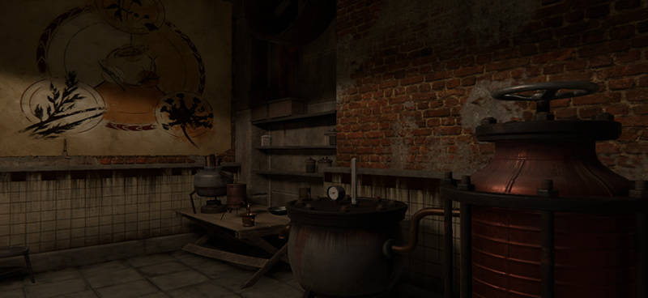
DICA: Caso tenha dúvidas de onde conseguir ervas para produzir as poções, de uma olhada no nosso "mapa útil" clicando aqui.
ATENÇÃO: Para produzir Infusões você irá precisar do "Alambique Menor", essa maquina pode ser consertada utilizando 1x Mola e 1x Sucata Metálica dentro do seu covil, a partir do dia 2. Já os Antibióticos e Analgésicos são feitos no "Alambique Maior" que fica ao lado do menor, ele também pode ser consertado a partir do dia 2 utilizando 1x Sucata Metálica e 1x Caixa de Ferramentas, porem no dia 4, Palitinho irá lhe ajudar a conseguir esses itens.
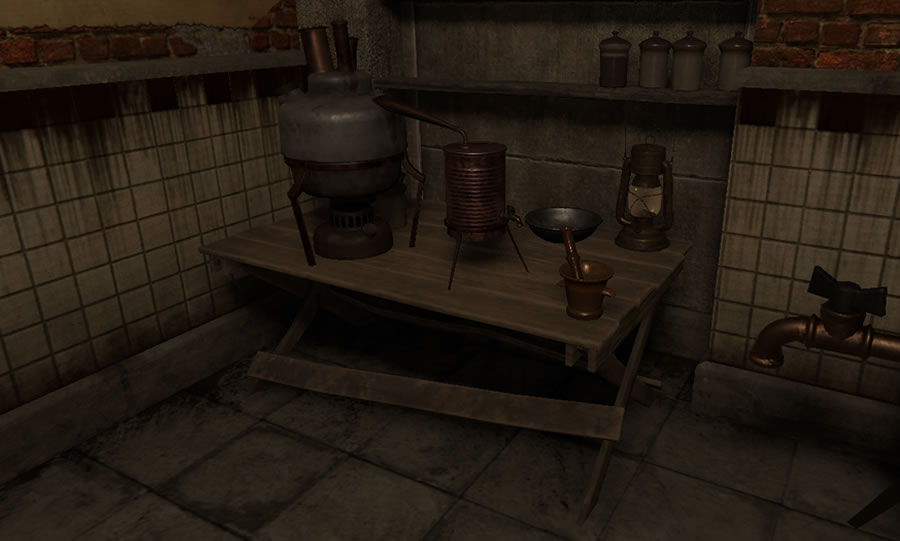
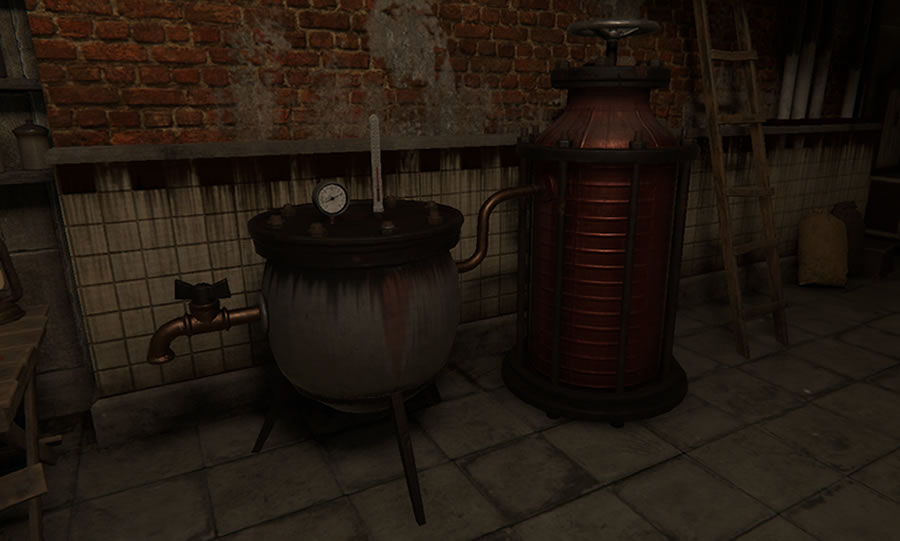
Infusoes
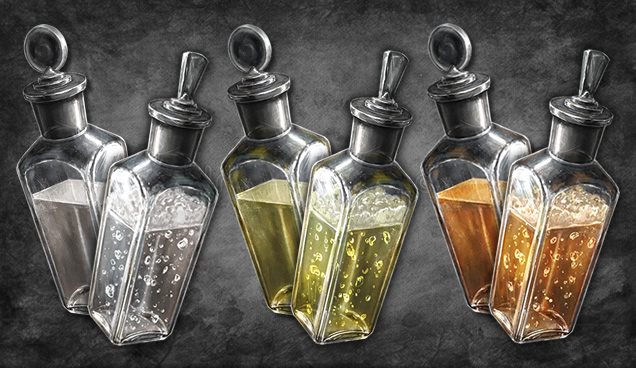
Infusões são utilizadas principalmente para diagnosticar pacientes, ao usá-la em uma pessoa doente ela poderá revelar sintomas da doença de acordo com a cor da infusão utilizada. As amarelas podem revelar sintomas nos nervos, laranjas revelam sintomas no sangue e brancas revelam sintomas nos ossos. Outros usos delas são para aumentar a sua imunidade ou de pessoas que estão em áreas de risco (diminui a chance delas se infectarem).
- Existem dois tipos de infusões, as normais e as mais potentes, visualmente as potentes tem bolhas dentro do frasco e um "(+)" do lado de seu nome.
Ok, mas qual a real diferença entre as duas?
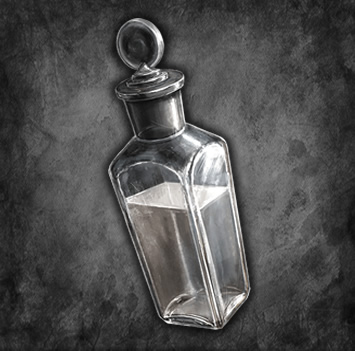
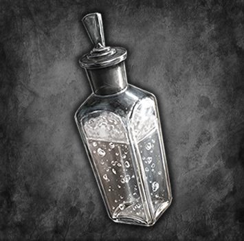
Infusões potentes podem revelar mais de um sintoma ao diagnosticar um paciente, porém aumentam ainda mais sua dor.
Infusões potentes aumentam mais a imunidade ao serem utilizadas em você ou em uma pessoa com risco de infecção.
DICA: Infusões potentes são o MELHOR item do jogo para aumentar a imunidade de pessoas que estão em áreas de risco diminuindo drasticamente a chance delas se infectarem no próximo dia!
Criando Infusoes Normais
Ingredientes
Para criar infusões normais você irá precisar:
2x
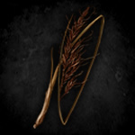
Ervas Comuns Diferentes
1x
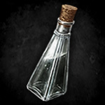
Garrafa de Água Pura
Combinações
Com esses ingredientes é possível realizar as seguintes combinações:
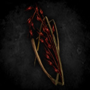
=
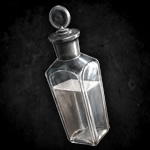
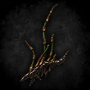
=
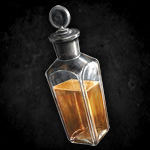
=
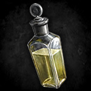
*Trocar a ordem das ervas não altera o resultado.
Garrafa de Água
Twyre Negra
Twyre Sangrenta
Twyre Marrom
Infusão "Medrel"
Infusão "Yas"
Infusão "Zurkh"
Criando Infusoes Potentes
A criação de infusões potentes (com o +) é relativamente simples, o que realmente interfere no resultado é qual erva rara você ira utilizar (cada uma representa uma cor/tipo de infusão), caso pretenda usar duas, o melhor é decorar os resultados nas combinações.
Ingredientes
Para criar infusões potentes você irá precisar:
1x
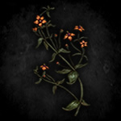
Erva Rara
1x
Erva Comum ou Rara
1x
Garrafa de Água Pura
Combinações
Com esses ingredientes é possível realizar as seguintes combinações:
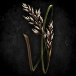
=
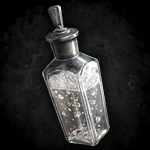
=
=
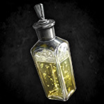
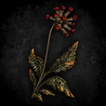
=
=
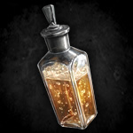
=
*Não é possível usar duas ervas raras iguais.
Chicote Branco
Swevery
Sibilo Cinzento
Infusão "Yas" (+)
Infusão "Medrel" (+)
Infusão "Zurkh" (+)
DICA: Recomendo utilizar somente 1x Erva Rara nesse tipo de composição, pois justamente como nos referimos aqui, elas são raras xD.
Antibioticos
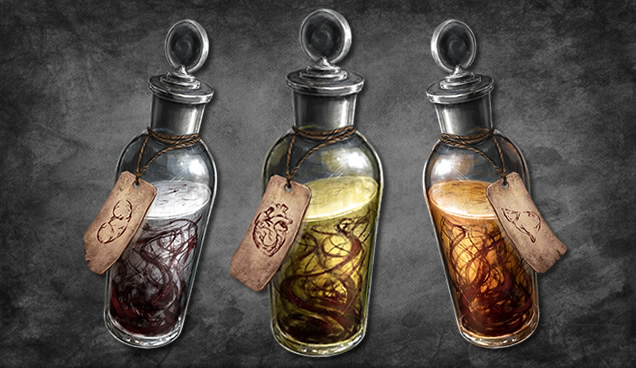
Antibióticos caseiros são utilizados principalmente para tratar pessoas infectadas, ao utilizar o antibiótico correto (com a cor exata do problema da pessoa) a infecção dela ira diminuir aumentando as chances da mesma sobreviver ao amanhecer do dia seguinte. Caso você esteja infectado e utilize um antibiótico caseiro, seu valor de infecção ira diminuir em troca de uma parte da sua vida atual.
DICA: Antibióticos caseiros não curam a praga e nunca irão matá-lo não importa o quão baixa esteja sua vida.
Criando Antibioticos
A criação de antibióticos é feita combinando infusões com órgãos infectados ou sangue infectado, assim como analgésicos eles demoram algumas horas para ficarem prontos, quanto mais potente o antibiótico mais demorado será.
A potência dos antibióticos afeta:
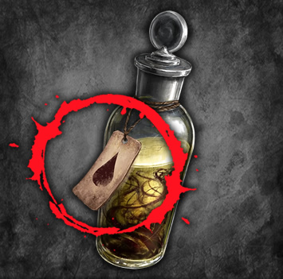
A aparência dessas pessoas pode variar um pouco, seja na cor do cabelo ou alguns detalhes da roupa, porem devido a forte semelhança entre pessoas de um mesmo tipo costuma ser fácil identificá-las
O quanto sua barra do fundo emergencial enche caso utilizado corretamente em um paciente comum.
A chance de sobrevivência de uma pessoa importante que esteja infectada.
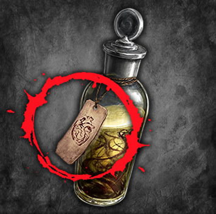
DICA #1: A cor/tipo do antibiótico criado sempre será a mesma da infusão utilizada em sua criação.
DICA #2: Já a potência do antibiótico é afetada pelo tipo de órgão usado, quanto mais raro o órgão infectado, melhor será o efeito do antibiótico. Cérebros infectados são os melhores materiais, seguidos por corações, depois figados, rins, e como pior recurso temos o sangue infectado.
Ingredientes
Para criar antibióticos você irá precisar:
1x
Infusão Normal ou Potente
1x
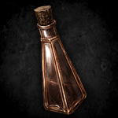
Órgão ou Sangue Infectado
Combinações
Com esses ingredientes é possível realizar as seguintes combinações:
=
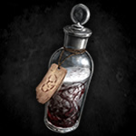
=
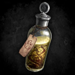
=
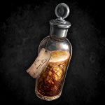
Antibiótico "Yas"
Antibiótico "Medrel"
Antibiótico "Zurkh"
Sangue Infectado
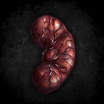
Rim Infectado
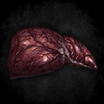
Fígado Infectado
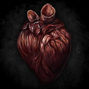
Coração Infectado
Cérebro Infectado
DICA #1: A única vantagem em utilizar infusões potentes ao invés de normais é que o antibiótico será produzido mais rápido, o resultado em si, é sempre o mesmo.
DICA #2: Após criar um antibiótico você pode checar em sua descrição de qual órgão ele foi feito.
Analgesicos
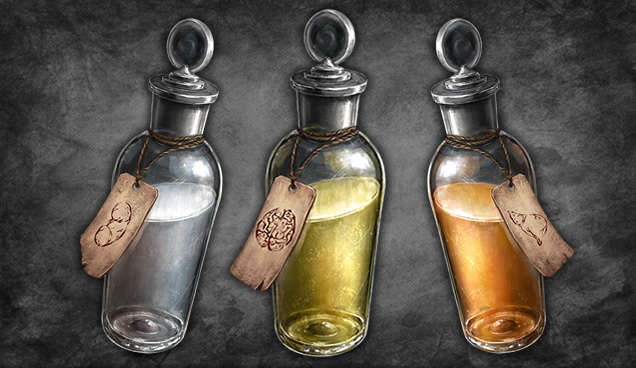
Analgésicos caseiros tem como principal função diminuir a dor de pessoas infectadas, porem o que muitos não sabem é que dependendo dos ingredientes utilizados em sua criação seus efeitos podem variar bastante caso usados em você mesmo. Dentre os efeitos possíveis temos diminuição de fome, diminuição da exaustão, aumento de imunidade, diminuição de sede e aumento da recuperação de exaustão ao dormir.
DICA #1: Todos os analgésicos caseiros quando usados por você aumentam sua recuperação de vida ao dormir nas próximas 2 horas, esse efeito acumula.
DICA #2: Quanto mais raro o órgão utilizado na criação do analgésico mais dor ele irá diminuir dos pacientes.
Criando Analgesicos
A criação de analgésicos é feita combinando infusões com órgãos saudáveis ou sangue normal, assim como antibióticos eles demoram algumas horas para ficarem prontos.
DICA #1: Os efeitos dos analgésicos variam de acordo com o órgão/sangue utilizado, analgésicos criados com cérebros diminuem sua exaustão, com corações diminuem sua fome, com figados aumentam sua recuperação de exaustão ao dormir (durante 2 horas), com rins aumentam sua imunidade e com sangue diminuem sua sede.
DICA #2: Já a potência/força do analgésico varia de acordo com a cor/tipo da infusão utilizada, veja as combinações abaixo para mais informações.
Ingredientes
Para criar analgésicos você irá precisar:
1x
Infusão Normal ou Potente
1x
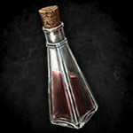
Órgão ou Sangue Saudável
Combinações
Com esses ingredientes é possível realizar as seguintes combinações:
=
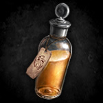
-20% de Sede
=
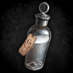
-15% de Sede
=
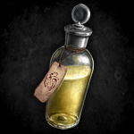
-10% de Sede
*Use o botão acima para dar pause/play na transição.
Analgésico "Yas"
Analgésico "Medrel"
Analgésico "Zurkh"
Sangue
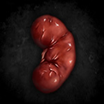
Rim
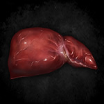
Fígado
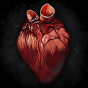
Coração
Cérebro
DICA: Assim como nos antibióticos a única vantagem de utilizar infusões potentes ao invés de normais é que o analgésico será criado mais rápido.
Utilizamos cookies e tecnologias semelhantes para permitir serviços
e funcionalidades no nosso site e para compreender a sua interação com o nosso serviço.
Ao utilizar este site, você concorda com o uso dessas informações.